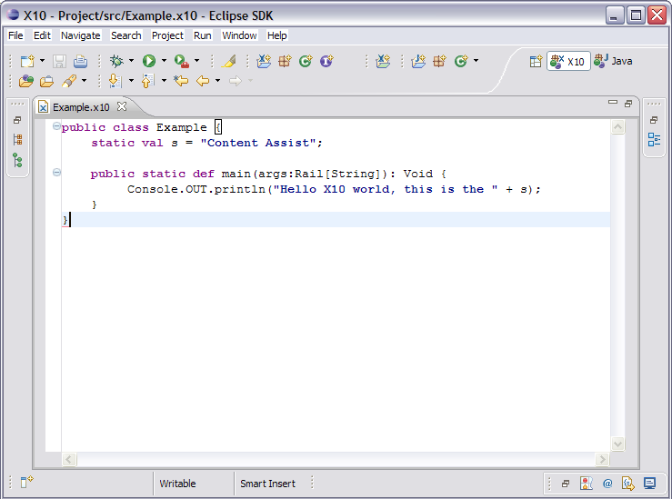

Back to Table of Contents
Content assist in X10DT
Content Assist includes several features that can reduce the number of keystrokes
you must type to create your code.
It makes predictions about what can be typed next,
based on the current context, scope, and prefix.
Functionality
In the X10 editor, control-space will activate the content assist feature, which
provides code templates. These templates suggest X10 constructs that
may be used in various contexts.
Content assist also provides limited support for code completion: displaying the members
of a type and identifier completion.
Currently the content assist feature works only in the absence of compilation errors.
The code completion aspect will become more useful once this restriction is lifted (future work).
Note that template proposals are non-exhaustive.
Code Templates
There are 2 contexts in which code templates can be activated: a class body and a method body.
More contexts will be added in the future. The following snapshots show examples of both.
In addition, this feature proposes qualifiers for field and method declarations.
Template proposals are filtered according to prefix. For example, if the user types control-space
followed by "a", only templates whose name start with "a" will be shown.



Back to Developing/Editing your X10 project
Back to X10DT Table of Contents